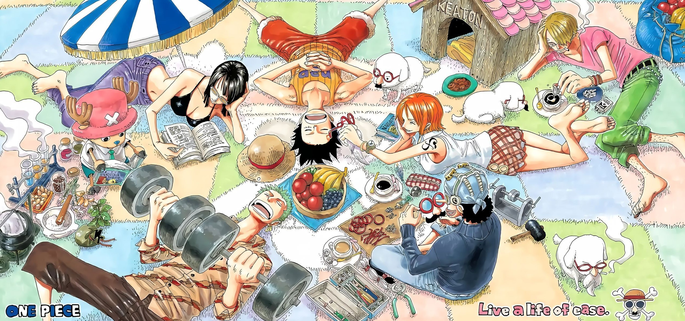

A golden compass shimmered with mysterious power. The night sea shimmered beneath a silver moon. The crew braced for impact as waves crashed aboard. When storms gathered without warning and towering waves crashed against the hull, even the bravest pirates were reminded that the ocean answered to no captain and no king. Buried secrets waited beneath layers of sand and time.
The falcon stoops with deadly grace. A single lie may shadow endless truths. O cruel betrayal, masked in friendship’s smile. Dark secrets haunt gilded halls. Rumor travels faster through a court than truth ever hopes to follow, and by the time a simple misunderstanding reaches the farthest corridor it has often grown into a tale worthy of a poet’s exaggeration.
In the garden, beneath branches heavy with summer blossoms, two friends debated the nature of loyalty, one insisting that it must be proven through action, while the other argued that true devotion rarely announces itself so loudly. The court resounds with hollow praise. The blade of time spares none. The wandering minstrel sang of kings and battles, of vows kept and promises broken, and though the melody was light the stories beneath it carried the weight of many generations. The patient seed outlasts the storm.

Este é um link para o site da Unifor. The captain’s boots echoed across the wooden planks. A pirate’s heart belongs to the ocean. Anchor dropped with a heavy splash near the forbidden island. The sea can turn friend to foe in the blink of an eye. No pirate sails alone for long.